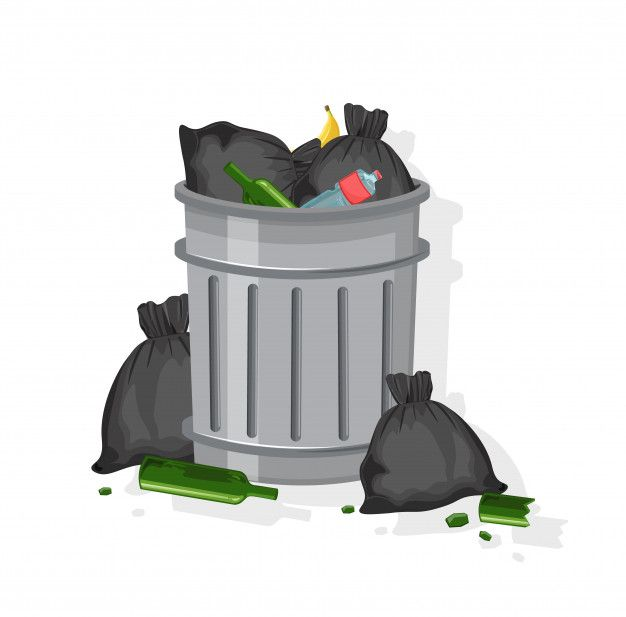

PENDAHULUAN
Fenomena gaya hidup praktis dan cepat di kota-kota besar, termasuk Kota Sampit, menyebabkan peningkatan konsumsi makanan cepat saji, minuman kemasan, dan belanja daring. Hal ini berdampak pada meningkatnya sampah sekali pakai seperti plastik, styrofoam, kardus, bubble wrap, dan kemasan makanan. Tren ini diperparah dengan maraknya layanan pesan antar makanan dan e-commerce, serta minimnya kebiasaan membawa wadah atau tas belanja sendiri.
Dampak yang terjadi karena Timbulnya Wabah corona di indonesia adalah Kepanikan Massal yang di alami Oleh warga indonesia Pada saat itu, Kepanikan massal akan terjangkit penyakit menular tersebut mengakibatkan beberapa alat kesehatan seperti Masker habis di pasaran
Di Kota Sampit, volume sampah rumah tangga harian mencapai lebih dari 100 ton, sementara kapasitas pengangkutan sampah hanya sekitar 80-83 ton per hari. Kondisi ini menyebabkan penumpukan sampah di delapan depo penampungan sampah yang tersebar di kota, sebelum sampah diangkut ke Tempat Pembuangan Akhir (TPA) di Jalan Jenderal Sudirman Km 14. Selain keterbatasan armada dan personel, akses menuju TPA juga sering terganggu terutama saat musim hujan karena jalan menjadi rusak dan becek.
Akibatnya, sampah plastik dan limbah sekali pakai sulit terurai dan menumpuk di TPA, sementara sebagian sampah berakhir di sungai atau dibakar secara liar, mencemari lingkungan dan udara. Penumpukan sampah di depo juga menimbulkan bau menyengat yang mengganggu kenyamanan warga sekitar, khususnya di Kecamatan Baamang dan Ketapang.
Pemerintah Kabupaten Kotawaringin Timur melalui Dinas Lingkungan Hidup (DLH) berkomitmen mengatasi persoalan ini dengan mengoptimalkan seluruh area TPA, memperbaiki sistem pengelolaan sampah di depo, serta mengajak peran aktif masyarakat untuk membuang sampah pada tempat yang telah disediakan dan mematuhi jadwal pengumpulan sampah. Langkah ini diharapkan dapat mengurangi penumpukan sampah dan menjaga kebersihan serta kesehatan lingkungan Kota Sampit.
OPINI PRIBADI
Menurut saya, budaya konsumtif dan penggunaan produk sekali pakai yang berlebihan bukan hanya soal kebiasaan, tetapi juga menjadi salah satu pemicu ledakan sampah di kota-kota besar, terutama di Kota Sampit ini. Saya sendiri pernah merasakannya saya sulit melepaskan diri dari penggunaan produk sekali pakai, hingga pada titik di mana saya kesulitan membuang barang-barang tersebut karena jumlahnya yang begitu banyak.
Dari situ saya menyadari bahwa ketergantungan terhadap produk sekali pakai bukanlah kebiasaan yang baik. Banyak orang mungkin menganggap hal ini sepele, tetapi bagi saya, kesadaran terhadap hal kecil seperti ini sangatlah penting dalam menjaga lingkungan. Jika tidak disikapi dengan bijak, perilaku ini dapat menimbulkan dampak negatif yang signifikan terhadap lingkungan maupun kesehatan.
KESIMPULAN
Menurut saya, langkah awal yang bisa dilakukan untuk mengatasi masalah sampah adalah dengan mulai mengurangi penggunaan produk sekali pakai dalam kehidupan sehari-hari, seperti membawa botol minum sendiri, menggunakan tas belanja kain, dan menghindari kemasan plastik berlebihan. Selain itu, membangun kesadaran lingkungan di kalangan keluarga dan teman juga penting, misalnya dengan mengajak mereka berdiskusi ringan tentang dampak sampah dan pentingnya pengelolaan limbah. Meski terlihat kecil, perubahan dari individu akan berdampak besar jika dilakukan secara bersama-sama dan konsisten.